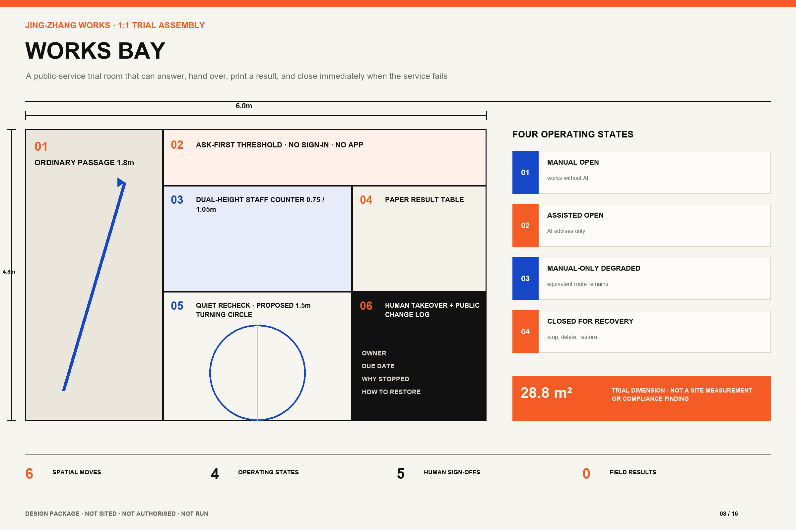

Prototype WorksContain failure before public release
Read the route. Find a person. Leave with a paper result that keeps the task moving. A person without a smartphone may not be abandoned halfway.



6.0 × 4.8 metres is a trial dimension, not a site measurement or compliance finding. Six spatial moves make the no-app route, paper result, and human takeover visible in one room.
No field task is complete. 12/12 means structural fields are present; 90/90 means offline synthetic rules returned expected decisions. Neither is field success.